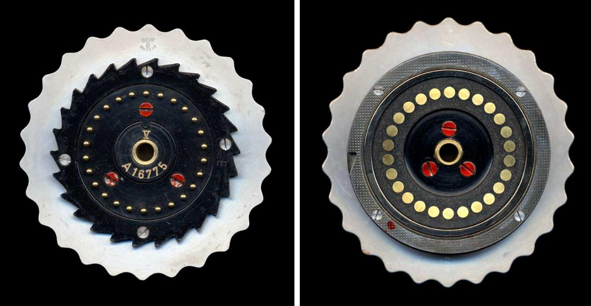

Hai bức mật mã do trung tâm tình báo Bletchley Park của Anh chặn được từ phát xít Đức trong thời chiến đến bây giờ vẫn chưa được giải. Vậy điều gì đã làm cho các chuyên gia mật mã của Thế chiến II phải vật lộn để tìm ra những điều bí ẩn chứa trong ba thông điệp chưa thể giải mã này? Mặc dù những chuyên gia mật mã của thời đại đã rất thành công trong giải mã nhiều thông điệp khác, họ vấp phải thách thức lớn nhất trong việc giải các thông điệp bí ẩn đó – máy Enigma.
/ / Giới thiệu chung
Máy Enigma là một loại máy có hệ thống đĩa quay dùng để tạo mật mã và giải mã các thông tin cơ mật. Chiếc máy Enigma đầu tiên do kỹ sư Đức Arthur Scherbius phát minh vào giai đoạn cuối của Chiến tranh thế giới thứ nhất. Đây được cho là cỗ máy mã hóa hiện đại nhất lúc bấy giờ. Máy được thiết kế dùng để bảo mật các thông tin trao đổi giữa các hãng lớn, bưu điện, giữa các cơ quan Chính phủ...
Thời gian đầu, quân đội Đức sử dụng rất thành công loại mã này để liên lạc với nhau, việc gửi các mật mã được tiến hành công khai qua sóng radio. Cho dù quân Đồng Minh bắt được tín hiệu, họ vẫn không thể hiểu được nội dung của các thông điệp bị mã hóa. Vì vậy, ở khoảng đầu cuộc chiến, quân đội Anh không thể dự tính được tàu ngầm Đức hoạt động nhằm phục kích các tàu vượt Đại Tây Dương chở vũ khí từ Mỹ viện trợ cho Anh và lực lượng Đồng minh châu Âu. Hậu quả là trung bình mỗi tháng Đức bắn chìm được 5000 tấn tàu hàng Đồng minh, gây tổn thất lớn khiến cuộc kháng chiến của Anh quốc có nguy cơ thất bại.

Bảng mật mã Enigma cho đến trước thời điểm này vẫn được xem là tuyệt chiêu của quân Đức Quốc xã. Mọi nỗ lực của các nhà giải mã thuộc lực lượng quân Đồng minh, trú đóng tại Công viên Bletchley trong thời chiến đều thất bại. Hitler ca ngợi Enigma là “mật mã số 1 thế giới đến thần thánh cung không giải nổi”.
Tổng cộng gần 100.000 máy Enigma đã được chế tạo trong suốt cuộc chiến. Sau khi Thế chiến Hai kết thúc, quân Đồng minh bán các máy Enigma thu giữ được cho các nước đang phát triển.
Mặc dù sau đó hầu hết thông điệp mã hóa từ Enigma đều bị giải mã, ta phải công nhận rằng cơ cấu cơ khí này thực chất là một bước cách mạng trong công nghệ mật mã khi gắn mật mã với điện - điện tử. Nó cũng đánh dấu một cột mốc rất quan trọng trong cả ngành mật mã và ngành hoa học máy tính nói chung. Từ việc giải bài toán mật mã, nó là nguồn cảm hứng để Alan Turing phát triển các thiết bị máy móc khác phức tạp hơn, hoạt động trên cơ chế không định trước (máy turing).
Xuất hiện trong văn hóa đại chúng
Văn học
Vở kịch Breaking the Code (1986) của Hugh Whitemore, tập trung nói về cuộc đời và cái chết của Alan Turing.
Tiểu thuyết Enigma (1995) của Robert Harris được đặt trong bối cảnh Thế chiến thứ Hai khi các nhà mật mã học đang tìm cách dịch mật mã Enigma.
Tiểu thuyết Cryptonomicon (1999) của Neal Stephenson chủ yếu mô tả Enigma và các nỗ lực để giải mã chiếc máy.
Phim ảnh
Sekret Enigmy (1979) là phim của Ba Lan nói về máy Enigma dưới góc nhìn của họ.
The Imitation Game (2014) kể câu chuyện về Alan Turing và nỗ lực giải mã chiếc máy Enigma trong Thế chiến Hai.

/ / Cơ chế mã hóa của Enigma
Mật mã là một trong những nền tảng tạo nên khoa học máy tính, và tuy ngành này chỉ mới phát triển trong mấy thập kỷ trở lại đây, nhưng nó có tốc độ bùng nổ chóng mặt. Mỗi ngày lại có một thuật toán mã hóa khác nhau và độ tin cậy của các mã cũng được tăng theo cấp số nhân, độ tinh vi và phức tạp tỉ lệ thuận với bình phương số transistor mà chắc có lẽ còn lâu chúng ta sẽ thấy được giới hạn cuối cùng.

Sơ lược về mật mã
Từ lúc con người sáng tạo ra chữ viết thì có lẽ mật mã cũng đã ra đời, người ta đã tìm thấy những chữ tượng hình không tiêu chuẩn trên các bức tượng tại Ai Cập cổ đại (cách đây 4500 năm). Những ký hiệu tỏ ra không phải để phục vụ mục đích truyền thông tin bí mật mà có vẻ như là nhằm mục đích gợi nên những điều thần bí, trí tò mò hoặc thậm chí để tạo sự thích thú cho người xem. Người Hy Lạp cổ đại cũng được biết đến là đã sử dụng các kỹ thuật mật mã (chẳng hạn như gậy mật mã). Cũng có những bằng chứng rõ ràng chứng tỏ người La Mã nắm được các kỹ thuật mật mã ( Mật mã Caesar và các biến thể). Thậm chí đã có những đề cập đến một cuốn sách nói về mật mã trong quân đội La Mã; tuy nhiên cuốn sách này đã thất truyền.

Các kỹ thuật mật mã phát triển chậm rãi theo thời gian, không có một bước tiến nào lớn.Tuy mật mã học có một lịch sử dài và phức tạp, mãi cho đến thể kỷ 19 mới được phát triển một cách có hệ thống, không chỉ còn là những tiếp cận nhất thời, vô tổ chức. Những ví dụ về phân tích mã bao gồm công trình của Charles Babbage trong kỷ nguyên của Crimean War về toán phân tích mật mã đơn ký tự. Công trình của ông, tuy hơi muộn màng, đã được Friedrich Kasiski, người Phổ, khôi phục và công bố. Tại thời điểm này, để hiểu được mật mã học, người ta thường phải dựa vào những kinh nghiệm từng trải (rules of thumb); xin xem thêm các bài viết về mật mã học của Auguste Kerckhoffs cuối thế kỷ 19. Trong thập niên 1840, Edgar Allan Poe đã xây dựng một số phương pháp có hệ thống để giải mật mã. Cụ thể là, ông đã bày tỏ khả năng của mình trong tờ báo hằng tuần Alexander's Weekly (Express) Messenger ở Philadelphia, mời mọi người đệ trình các phương pháp mã hóa của họ, và ông là người đứng ra giải. Sự thành công của ông gây chấn động với công chúng trong vài tháng. Sau này ông có viết một luận văn về các phương pháp mật mã hóa và chúng trở thành những công cụ rất có lợi, được áp dụng vào việc giải mã của Đức trong Thế chiến II.
Trước và trong thời điểm của Thế chiến II, nhiều phương pháp toán học đã hình thành (đáng chú ý là ứng dụng của William F. Friedman dùng kỹ thuật thống kê để phân tích và kiến tạo mật mã, và thành công bước đầu của Marian Rejewski trong việc bẻ gãy mật mã củ hệ thống Enigma của Quân đội Đức). Các hệ thống mật mã cơ khí và cơ điện tử được sử dụng rộng rãi mặc dù các hệ thống thủ công vẫn được dùng tại những nơi không đủ điều kiện. Các kỹ thuật phân tích mật mã đã có những đột phá trong thời kỳ này, tất cả đều diễn ra trong bí mật. Cho đến gần đây, các thông tin này mới dần được tiết lộ do thời kỳ giữ bí mật 50 năm của chính phủ Anh đã kết thúc, các bản lưu của Hoa Kỳ dần được công bố cùng với sự xuất hiện của các bài báo và hồi ký có liên quan.
Máy Enigma
Trong chiến tranh thế giới thứ 2 người Đức đã sử dụng rộng rãi một hệ thống máy rôto cơ điện tử, dưới nhiều hình thức khác nhau, có tên gọi là máy Enigma. Máy Enigma là một loại máy có hệ thống đĩa quay dùng để tạo mật mã và giải mã các thông tin cơ mật. Máy Enigma đầu tiên do kỹ sư Đức Arthur Scherbius phát minh vào giai đoạn cuối của Chiến tranh thế giới thứ nhất. Trong thập niên 1920, máy mã Enigma được thiết kế cho mục đích dân sự và người ta có thể mua nó một cách dễ dàng ở trên thị trường.
Máy Enigma được sử dụng trong lĩnh vực thương mại nhưng sau đó được quân đội của nhiều quốc gia sử dụng, nhiều nhất là quân đội Đức Quốc xã trước và trong Chiến tranh thế giới thứ hai. Khi đó, trong hải quân Đức, người ta gọi nó là máy "M". Quân Đức được lệnh hủy máy mã hóa Enigma nếu bị thua, phải rút quân hoặc bị bắt nhằm tránh để lọt bí mật vào tay quân Đồng minh. Chính vì vậy mà ngày nay còn rất ít máy Enigma còn sót lại.
Loạt máy mã Enigma cải tiến lần đầu tiên được đưa vào sử dụng trong hải quân Đức Quốc xã năm 1926 và hai năm sau cho Lục quân. Quân đội Đức mua các máy mã Enigma dân sự và cải tiến nó để đáp ứng cho nhu cầu cần thiết của quân đội và không kịp loại bỏ nó khỏi thị trường tự do. Máy mã Enigma đã được cải tiến và dần dần tăng mức độ phức tạp trong ứng dụng cho mục đích quân sự. Năm 1930, khi nhu cầu sử dụng tăng lên, một mẫu Enigma mới phức tạp và hoàn thiện hơn.
Cấu tạo
Enigma được cấu thành bởi ba bộ phận chính:
Một bàn phím để nhập bức điện
Một bộ mã hóa để biến chữ cái vừa nhập thành mật mã
Một bảng gồm những bóng đèn nhấp nháy thể hiện những chữ cái được mã hóa đó
Bộ phận mã hóa gồm 3 bánh xe quay chữ có thể đổi chỗ cho nhau. Dưới bàn phím là bảng điện chứa 6 sợi cáp. Các rotor hình thành trung tâm của một máy Enigma. Mỗi rotor là một đĩa đường kính khoảng 10 cm được làm từ cao su cứng hoặc bakelite với đồng, lò xo, các chân tiếp xúc điện sắp xếp theo một vòng tròn. Mỗi chân tiếp xúc đại diện cho bảng chữ cái, thường là 26 chữ từ A-Z. Các rotor được gắn trên một trục chính với các chân tiếp xúc vào rotor kế bên.
Bộ phận bàn phím dùng để nhập thông tin cần mã hóa cũng như nhập thông tin để máy trả về (không phải là giải mã). Các phím được bố trí y hệt cách bố trí của máy đánh chữ những năm 1920 (gần giống với ngày nay).
Theo trình tự hoạt động từ 2 đến 9 (với 1 là nguồn – pin hóa học) . Dòng điện chạy trong mạch được biểu thị bởi hướng mũi tên đỏ. Dòng điện chạy từ pin (1) qua nút A trên bàn phím khi ta nhấn xuống (nút A trên bàn phím là 1 công tắc) (1) -> (2). Sau đó điện sẽ chạy xuống chấu A ở plugboard (chấu A cũng là 1 dạng công tắc kiểu cầu chì), vì chấu A không có đầu chuyển cắm vào (công tắc đóng), dòng điện chạy qua (3). Dòng điện chạy lên khu vực rotor, khiến rotors quay đồng thời, mã hóa giá trị nhập vào trả về S (4,5,6). Dòng điện chạy về S, ở S có jack cắm vào đẩy thanh dẫn điện ra đồng thời nối qua D. Giá trị S đổi thành giá trị D. (7) -> (8). Điện từ chấu D chạy về đèn D (9), mạch kín -> đèn tại D sáng.
Phần quan trọng nhất của máy liên quan đến mã hóa, cơ chế hoạt động của rotors cũng chính là cơ chế mã hóa. Sau khi nhận mã, từ 3 bánh răng ban đầu, ta cần sắp xếp lại trình tự bánh răng ứng mũi tên để phù hợp cho quá trình mã hóa và giải mã.
Với mô hình đơn giản nêu trên, giả sử ta cho mã 7-6-5 trong bảng so, tương ứng với mã DOG. Điều chỉnh bộ gõ để 3 chữ trên 3 bánh răng lần lượt là D O G thẳng chỗ mũi tên, sau đó mã hóa theo văn bản cần mã hóa.
Với A là input, ở bánh răng 3, ta nhận được J là encryption output (trên hình người viết ngồi ngược nên viết nhầm). Và tiếp tục lần lượt theo thứ tự trên cho đến khi mã hóa hết. Ngoài ra để tăng độ khó cho code, mã sẽ được phân ra loại 4 hay 5 ký tự, người dịch có mã chỉ cần tinh ý, nếu không có mã và máy, thì khi nhìn vào người đọc chỉ nhìn rằng đó là 1 mớ vô nghĩa.

Người Đức đã sáng tạo ra 1 bộ rotor song đối, với tương tác bằng điện ở lõi, đồng thời tăng gấp đôi số rotor chạy mà không cần tăng số lượng lên bằng reflextor.
Các đầu pin (đầu tù) được mạ vàng để tăng độ dẫn điện, tương tự ở đầu bên kia với vòng dẫn điện (4) (là các ô tròn tiếp xúc với pin) (mỗi pin tương ứng với 1 chữ)
Đây là điều mà khi ta nhập đưa một chữ vào và giá trị trả về (cho dù có nhập cùng 1 chữ), khi thay đổi 1 đầu pin (không tác động đến thứ tự trên các bánh răng) thì có thể trả về 2 giá trị khác nhau (thay đổi thứ tự nối dây điện ở trong pin).
Khi nhập, vòng 1 chiều (10) bên phải sẽ xoay thêm 1 mức (bởi động cơ bằng điện chạy trong rotor phải), tương ứng với “advanced one position”, dòng điện sẽ chạy qua các pin, dòng điện đi 2 lượt 3 bánh xe (lượt đi và lượt về), điều này khiến việc suy ngược càng thêm khó khăn (giải 8 bánh răng đơn trên 3 bánh răng, giả sử lượt đi bánh răng 1 là A, thì sau khi xoay thứ tự đối song của các pin thay đổi thì bánh răng 1 thành B khác biết hoàn toàn) (tương đương với việc đổi dấu mũi tên ở các bánh xe liên tục).
Vì tính phức tạp của hệ thống này, đến chính những kẻ tạo ra nó là người Đức cũng bó thay trong việc giải mã nếu như không dùng máy enigma giải mã tương đương (có cùng cài đặt) với máy Enigma đã mã hóa. Tổng cộng trong quân đội Đức chỉ có 5 loại bánh xe được sử dụng, mỗi loại được phân ra số cách sắp xếp khác nhau. Trên máy enigma sẽ lựa từ 3 (loại cơ bản) hoặc 5 (loại cải tiến) bánh xe, các bánh xe khác loại nhau. Số cách mã hóa trên bánh xe ở loại 3 là 17.576 cách. Tuy nhiên, việc xoay về trên cùng đầu như thế khiến 2 ký tự input và output không thể là cùng 1 chữ, bánh xe chỉ có 26 răng tương đương vớ 26 chữ, đây chính là 1 mấu chốt trong việc giải máy Enigma.
Hệ thống plugboard là 1 hệ thống dây dẫn và jack đơn giản, tráo chữ khi nhập và xuất trên bảng mã hóa. Khi jack được gắn vào, nó đẩy thanh kim loại phía trong, chuyển hướng dòng điện, đồng nghĩa với việc đổi được ký tự. Tuy chỉ là 1 hệ thống dây dẫn, số cách xáo trộn tăng lên số lần bằng 26!/(6!.10!.2^10 ) ~ 160 nghìn tỉ . Tích các kết quả của mã hóa ~ 160 nghìn tỉ * 17576 ~ 160 tỷ tỷ ( con số không tưởng). Nếu lấy toàn bộ người Anh ở thời điểm đó đoán từng trường hợp 1 để giải 1 code sẽ phải mất 6 tháng (cho 1 code dùng trong 1 tiếng).
Làm thế nào người Đức liên lạc bằng mã mà không có máy giải mã?
Trước khi máy bombe của Alan Turing được chế tạo, người Đức giải mã kiểu gì? Câu trả lời rất đơn giản, dựa vào cơ cấu bánh xe ở phần rotor, thì để decode, chỉ cần setting cho bánh xe về đúng bánh xe đã encryption theo trình tự ngược lại : A1 > A2 > A3 về A3 > A2 > A1 và mẫu DOG về GOD. Tuy hơi mất thì giờ, nhưng phương án này tốn ít thời gian hơn nghiên cứu một cỗ máy to lớn chỉ để giải thường xuyên, và cũng để tránh việc bị lộ cách giải. Yêu cầu được đặt ra cho các đơn vị mật mã Đức là: Đảm bảo bí mật khi giải, tiêu hủy khi cần thiết và luôn phải căn chỉnh cho hệ thống đúng với máy mã hóa ở Berlin. Để đảm bảo cho việc đó, họ đã tạo ra 1 hệ thống căn chỉnh máy đồ sộ, căn cứ vào thời gian để đổi, gọi là Schlüssel. Tài liệu mà mỗi mật mã viên Đức đều có chứa setting của máy với 4 thông số: Walzenlage, Ringstellung, Steckerverbindungen, Grundstellung. Tương ứng với: Cách lựa chọn loại rotors, cách đặt số trên rotors, cách gắn jack vào plugboard, và chuỗi ký tự bắt đầu mã hóa trong tin nhắn mã hóa.
Chuỗi mã hóa sẽ được gửi đi bằng sóng vô tuyến với mã morse, đó là 1 chuỗi ký tự vô nghĩa, nhưng với Grundstellung, mật mã viên sẽ biết được nên bắt đầu từ vị trí nào (trước đó mật mã viên sẽ set máy theo giờ) nhập ký tự đã mã hóa vào máy sẽ thực hiện quá trình decode, mật mã sẽ được giải ra đúng như khi nhập vào.
/ / Quá trình giải mã
Sau khi giành được độc lập, quân đội Ba Lan xuất hiện nhu cầu thành lập một bộ phận có nhiệm vụ chặn thu và đọc các điện mật của quân đội các nước láng giềng. Người được giao nhiệm vụ đó là Trung uý Jan Kowaleski. Ông đã thành lập cơ quan mật mã đầu tiên của quân đội Ba Lan, sau đó người kế nhiệm là Thiếu tá Franciszek Pokorny.
Ba Lan với thiên tài Marian Rejewski đã giải mã thành công máy Enigma nhờ toán xác suất
Khi Hải quân và Lục quân Đức bắt đầu mã hóa các bức điện bằng máy Enigma, Cơ quan mật mã Ba Lan không thể giải được thông điệp nên họ đã mua ở thị trường tự do Đức mẫu máy Enigma dùng trong thương mại. Một số sĩ quan của đơn vị này được giao nhiệm vụ khai thác và phá giải các bức điện chặn thu được, nhưng không đem lại một kết quả khả quan nào. Vấn đề trên đòi hỏi phải tổ chức tấn công phá mã từ phía khác.
Tháng 1/1929, Viện Toán Trường Đại học Tổng hợp Poznan tổ chức một khoá huấn luyện về mật mã nhằm chọn lựa những sinh viên giỏi và tài năng về vấn đề này để đào tạo và phục vụ thám mã. Trong khoá huấn luyện đã phát hiện 8 tài năng trẻ; hai trong ba người xuất sắc nhất đã được gọi tập trung tham gia nhóm thám mã các điện mật của Đức, làm việc tại Bộ chỉ huy quân sự thành phố Poznan. Nhân vật thứ ba là Marian Rejewski (hình) được gửi đi học ở Đại học Tổng hợp Getyndz với chuyên ngành “Xác suất thống kê”. Năm 1930, ông trở về nước cùng tham gia nhóm nghiên cứu mật mã.
Tài liệu để cơ quan thám mã Poznan giải mã được cung cấp từ 4 nguồn chính là các trạm chặn thu thông tin ở Poznan, Warszawa, Gdansk, Krakow. Cho đến thời gian này, các bức điện đều được các chuyên gia Marian Rejewski, Jerzy Rozycki và Henryk Zygalski giải mã thành công. Thấy được khả năng to lớn trong việc thám mã Enigma, Chỉ huy phó Cơ quan mã thám, Thiếu tá Gwidon Langer đã chuyển cho Rejewski 4 tài liệu mà lực lượng tình báo Pháp thu được, đó là: bức ảnh máy Enigma dùng cho quân sự, bản hướng dẫn sử dụng máy mã Enigma và hai bảng khoá đã sử dụng cách đó một năm. Các nhà nghiên cứu hiện nay đã khẳng định: thông tin chứa trong các tài liệu đó chưa đủ để thám mã Enigma vì còn phụ thuộc vào phương thức ghép nối các bánh răng bên trong. Tuy nhiên, tài liệu đó đã trợ giúp phần nào cho Rejewski trong việc loại bỏ một vài ẩn số trong các phương trình hoán vị.
Tháng 12/1932, Marian Rejewski đã dựng lại hệ thống phân tích mật mã dựa trên toán học. Đây có thể coi là đột phá lớn nhất trong lịch sử phân tích mật mã. Rejewski đã cùng với các đồng sự của mình tiếp tục nghiên cứu và bắt nhịp với những tiến hóa trong các thành phần hệ thống cũng như các thủ tục mật mã hóa.
Các chuyên viên mật mã Ba Lan đã phát minh ra máy giải mã cơ điện đầu tiên “bẻ gãy” hệ thống mã hóa Enigma. Họ phát minh ra thiết bị này vào năm 1938 và gọi sáng chế này là “bombe”. Các bombe gồm 6 máy Enigma được kết nối, vì vậy mà tất cả 6 cài đặt rotor có thể được kiểm tra cùng một lúc. Sử dụng bombe, người Ba Lan đã có thể xác định cài đặt rotor Enigma và giải mã các thông điệp của Đức Quốc xã trong vòng hai giờ. Ba Lan là nước duy nhất trên thế giới có khả năng như vậy vào thời điểm này và đã có hàng ngàn bức điện mật được mã bằng máy mã Enigma được giải mã. Tháng 12/1938, quân đội Đức đã cho cải tiến Enigma, bổ sung thêm 2 bánh răng vào thiết bị này (trong thực tế người ta vẫn dùng song song cả loại 3 bánh răng bên trong), điều đó khiến cho việc giải mã Enigma của những nhà mật mã Ba Lan lâu thêm gấp 10 lần so với trước nhưng những kết quả bước đầu này vẫn được cung cấp cho cơ quan tình báo vô tuyến Anh.
Tuy nhiên đó mới chỉ là nguyên mẫu Enigma đầu tiên và chưa hoàn thiện. Cỗ máy Enigma lúc đó gặp phải hạn chế và dễ bị bắt bài, vì việc mã hóa từ chữ A sang B, có thể suy ngược lại B nghĩa là A. Chính điều này đã giúp các chuyên gia mật mã Ba Lan gần như đã đánh bại được Enigma. Tuy nhiên phát xít Đức đã nhanh chóng cải tiến cỗ máy này với hệ thống hoán đổi plugboard. Đây là một hệ thống điện, để hoán đổi các chữ cái thêm một lần nữa, tối đa là 6 kết nối. Tuy nhiên điểm đặc biệt của hệ thống này là nó chống lại việc suy ngược các ký tự. Tức là từ A thành B, nhưng ngược lại từ B lại ra C.
Hệ thống này đã tăng khả năng mã hóa của Enigma lên con số 100.391.791.500 cách. Năm 1939, phát xít Đức tiếp tục cải tiến Enigma một lần nữa, với việc tăng từ 3 lên 5 rotor và hệ thống hoán đổi plugboard từ 6 lên 10 kết nối. Điều này đã khiến cho cỗ máy mã hóa này có thể tạo ra 159 triệu triệu triệu kết quả. Điều này đã khiến bombe của Ba Lan trở nên gần như vô dụng, trận chiến của trí thông minh đã nghiêng về các chuyên gia Đức Quốc xã.
Máy Turing Bomb ra đời
Các thành viên chủ chốt của Cục Mật mã Ba Lan đã hợp tác với các nhà mật mã học của Anh tại Bletchley Park. Những người Anh, trong đó bao gồm những tên tuổi lớn của ngành mật mã học như Gordon Welchman và Alan Turing, người sáng lập khái niệm khoa học điện toán hiện đại, đã góp công lớn trong việc phát triển các kỹ thuật phá mã hệ thống máy Enigman.
Alan Turing (23/6/1912 - 7/6/1954) được xem là một nhà toán học, logic học và mật mã học người Anh và thường được xem là cha đẻ của ngành khoa học máy tính. Ngay từ lúc còn nhỏ, ông đã thể hiện các dấu hiệu thiên tài. Ông tự tập đọc trong vòng ba tuần, và có biểu lộ ham thích toán học, cùng với giải đáp các câu đố. Tuy có năng khiếu toán và khoa học nhưng ông không được coi trọng vì trường này đánh giá các môn kinh điển cao hơn. Năm 1927 ông đã giải được nhiều bài toán bậc cao trước khi học giải tích cơ bản. Khi ông 16 tuổi (1928) ông đã hiểu rõ được các tác phẩm của Albert Einstein.

Vì Turing không chịu học các môn ngoài toán và khoa học, ông không nhận được học bổng để học tại Học viện Trinity của Đại học Cambridge, mà phải học tại King's College của Đại học Cambridge từ năm 1931 đến 1934 và tốt nghiệp đại học với bằng danh dự. Năm 1935 ông được chọn làm nghiên cứu sinh tại trường King's, nhờ chất lượng của luận văn trong đó ông đã chứng minh định lý giới hạn trung tâm, mặc dù ông không nhận ra rằng nó đã được chứng minh năm 1922 bởi Jarl Waldemar Lindeberg (nhà toán học nổi tiếng Phần Lan). Năm 1936 ông làm giảng viên tại Đại học King’s College. Từ tháng 9 năm 1938, Turing làm thêm giờ tại Trường mật mã của chính phủ.
Sau khi hợp tác, dưới sự lãnh đạo của Alan Turing, một máy giải mã cơ điện có tên là Turing Bombe được chế tạo thành công năm 1940. Turing Bombe hoạt động dựa trên phương pháp nối các máy giải mã lại với nhau thành một hệ thống để tìm ra công thức cài đặt của Enigma. Thời đó, các bombe Anh là một kỳ quan của kỹ thuật cơ khí và điện. Nó có chức năng tương đương với 36 máy Enigma và có khả năng tính toán các cài đặt rotor cho các phím trong khoảng 12 giờ mỗi ngày.
Từ thời điểm đó, tất cả các tin nhắn có thể được đọc trong thời gian thực. Có tới 210 bombe Anh được xây dựng trong thời gian chiến tranh và tất cả đã bị phá hủy vào những ngày cuối của cuộc chiến.
Bài toán cuối cùng - Enigma 4 rotor
Dù vậy, Bombe không phải là một giải pháp hoàn thiện để đối phó với Enigma. Đầu năm 1940, Turing được yêu cầu thực hiện nhiệm vụ giải mã hệ thống Enigma của Hải quân Đức, hệ thống này được mã hóa chặt chẽ hơn nhiều so với của lục quân và không quân.
Thách thức này với nhà toán học Alan là không nhỏ. Mỗi máy Enigma sử dụng một hình thức thiết lập trước khi mã hóa thông điệp. Lực lượng lục quân và không quân Đức được cho phép tự thiết lập Enigma để mã hóa thông tin, nhưng lực lượng Hải quân Đức đã xuất bản một cuốn sách mật mã riêng để buộc lực lượng này phải áp dụng kiểu thiết lập Enigma theo quy định. Alan đã suy luận được quy luật thiết lập Enigma của Hải quân Đức nhưng nhóm của ông cần có được cuốn sách mật mã để có thể tiến xa hơn trong việc giải mã.
Ngày 9/5/1941, tàu khu trục HMS Bulldog của Anh đã trục vớt được tàu ngầm U110 của Đức và lấy được sách mã Enigman cùng với hai máy mật mã và nhiều tài liệu quan trọng khác. Dựa trên kết quả của việc giải mã, quân Đồng minh đã chiếm lợi thế trong trận hải chiến Đại Tây Dương. Alan Turing và các đồng nghiệp bắt đầu giải mã được các điện mật của lực lượng này. Việc thu và giải mã các điện mật của Hải quân Đức đóng vai trò then chốt trong các cuộc hải chiến trong Chiến tranh Thế giới thứ 2. Các tàu ngầm U - boat và tàu chiến Đức được định vị và bị đánh chặn trong khi các đoàn tàu tiếp tế của quân đồng minh có thể tránh được những thiệt hại do Hải quân Đức gây ra.
Khi Mỹ tham chiến, họ xây dựng một bombe để giải mã máy Enigma 4 rotor của hải quân Đức. Vào cuối năm 1942, Alan Turing du lịch sang Mỹ và bắt liên lạc với các nhân viên phân tích mật mã của Hải quân Mỹ về việc chiếc máy không thể giải mã Enigma đã được MI6 giải mã thành công. Không những thế, Alan Turing còn cố vấn cho các chuyên gia mật mã của Mỹ để lắp ráp lại cỗ máy Bombe để người Mỹ có thể tự giải mã các bức điện họ bắt được của Phát Xít Đức.
Năm 1943 họ bắt đầu giải được máy Enigma 4 rotor của hải quân Đức. Bombe này được thiết kế để có thể giải mã nhanh hơn sự kết hợp lớn hơn các thiết lập của loại máy 4 rotor của hải quân Đức. So với loại Enigma 3 rotor, số lượng kết hợp rotor tăng 60-336 (8 x 7 x 6). Hệ thống này của người Mỹ nhanh hơn các đối tác Anh tới 34 lần. Những bombe này thực sự khổng lồ và nặng tới 2.5 tấn, đã có 121 bombe của Mỹ được xây dựng trong chiến tranh.
Trước khi Mỹ tham chiến, tàu ngầm của Đức Quốc xã là mối đe dọa lớn nhất đối với nước Anh. Họ phụ thuộc vào nguồn cung cấp từ Mỹ, và Đức quốc xã với chiến lược “wolfpacks - bầy sói” đã đánh chìm trung bình 60 tàu mỗi tháng.
Một điều đáng kinh ngạc đối với Enigma là bí mật được duy trì trong nhiều thập kỷ sau Thế chiến thứ II. Khoảng 11.000 người tại Bletchley Park và 4.000 ở Mỹ cùng nhau làm việc để giải mã Enigma, mặc dù đông người tham gia như vậy nhưng các bí mật không hề bị tiết lộ mãi cho đến khi chính phủ Anh công khai thừa nhận việc này vào năm 1974, tức là gần 30 năm sau khi chiến tranh kết thúc.
Nhóm giải mã Bletchley Park từng được tôn vinh như những người hùng trên truyền hình, được dựng phim và viết tiểu thuyết. Giờ đây, các cựu nhân viên khi xưa vẫn chưa hề có ý định đóng lại quyển sách Thế chiến thứ II, và luôn mong có người giải được những tin nhắn mật mã còn sót lại. Và họ nhường quyền đó lại cho những người thật sự đam mê.
Các loại máy
Dòng máy Enigma bao gồm nhiều thiết kế khác nhau. Mẫu máy đầu tiên được dùng trong thương mại trong đầu những năm 1920. Vào giữa những năm 1920, quân đội Đức bắt đầu sử dụng Enigma và thay đổi vài chi tiết của máy cho phù hợp với yêu cầu bảo mật. Vài quốc gia khác sau đó cũng phỏng theo hoặc bắt chước Enigma để chế tạo ra máy mã hóa riêng của họ.
Vào ngày 23 tháng 2 năm 1918, Arthur Scherbius đăng kí bằng sáng chế cho chiếc máy mã hóa dùng rô tơ của ông. Scherbius và E. Richard Ritter sau đó sáng lập ra Scherbius & Ritter. Họ giới thiệu thiết kế của máy cho Hải quân Đức và Bộ Ngoại giao nhưng đều bị từ chối. Scherbius & Ritter sau đó giao quyền sáng chế cho Gewerkschaft Securitas, người sáng lập Chiffriermaschinen Aktien-Gesellschaft (Cipher Machines Stock Corporation) vào ngày 9 tháng 7 năm 1923; Scherbius và Ritter đều ở trên vị trí điều hành.
Các mẫu máy dùng trong thương mại: Enigma A (1923), Enigma B (1924), Enigma C (1926), Enigma D (1927), "Navy Cipher D" – Italian Navy, Enigma H (1929) (hình), Enigma K, Typex

The Reichsmarine là nhánh quân sự đầu tiên sử dụng Enigma. Phiên bản Funkschlüssel C ("Mã hóa vô tuyến C") được đưa vào sản xuất từ năm 1925 và được bắt đầu sử dụng từ năm 1926. Các mẫu khác: Enigma G (1928–1930), Wehrmacht Enigma I (1930–1938), M3 (1934), Phiên bản bổ sung thêm hai rô tơ (1938), M4 (1942).
Những bức điện chưa được giải
Dự án có tên M4 cũng của Trung tâm nghiên cứu Bletchley Park bắt đầu hoạt động đầu tháng 1 năm 2006 với mục tiêu mở được ba nội dung tài liệu Enigma gốc do người Đức tạo ra năm 1942.
Ba nội dung mã Enigma không giải ra đã được đăng trên một tạp chí chữ mật mã vào năm 1995, và từ đó đến nay thu hút nhiều người nhiệt tình tham gia giải mã. Dẫu rằng được cho là không mấy quan trọng về mặt tư liệu lịch sử, nhưng thực tế chúng vẫn thuộc một số nội dung mật mã hải quân Đức còn chờ giải mã.
Người giải được là Stefan Krah, nghệ nhân vĩ cầm Đức - là người rất quan tâm đến ngành mật mã và phầm mềm nguồn mở rộng. Stefan Krah viết một chương trình bẻ mật mã, rồi công bố trên Internet cho các nhóm thông tin khác xem, hy vọng họ hợp tác với anh hoặc chỉ bảo những điều cần thiết. Ban đầu dự án thu hút sự chú ý của khoảng 45 người sử dụng. Tất cả họ cho phép Stefan Krah sử dụng máy của họ vào dự án M4 (đặt theo tên của máy M4 Enigma gốc). Nhưng đến nay đã có đến 2.500 đầu cuối (terminals) riêng rẽ cùng góp sức vào dự án này. Chỉ trong vòng hơn 1 tháng, từ sự kết hợp ngẫu nhiên các chữ cái, một thông tin thật thời chiến tranh đã xuất hiện. Trong một cuộc kiểm tra thử lại các tài liệu còn lưu trữ xác nhận thông tin đó được Đại úy thuyền trưởng Hartwig Looks, Chỉ huy trưởng tàu ngầm U264 của Hải quân Đức Quốc Xã, gửi đi ngày 25/11/1942.
Đến ngày nay, hai bức điện còn lại vẫn còn đang được tiếp tục giải mã.
/ / Phụ lục
Người khởi xướng lĩnh vực trí tuệ nhân tạo
Không chỉ góp phần trong việc phát minh ra máy tính điện tử hiện đại, Turing còn được coi là người đi tiên phong trong việc tạo ra trí tuệ nhân tạo. Đây là một lĩnh vực khoa học và công nghệ nhằm làm cho máy móc có được trí thông minh của con người. Turing có niềm tin bất diệt rằng máy tính cũng có thể suy nghĩ như con người, và với một phần mềm thích hợp, chúng có thể trò chuyện mà chúng ta không thể phân biệt được đó là con người hay chỉ là một cỗ máy vô tri. Năm 1950, ông trở thành người đầu tiên khởi xướng lĩnh vực trí tuệ nhân tạo khi đưa ra phép thử Turing (Turing Test). Đây là bài kiểm tra khả năng trí tuệ đầu tiên cho máy tính thông qua một cuộc thảo luận giữa người chơi với một con người và một chiếc máy tính. Một chiếc máy tính vượt qua phép thử và được coi là có khả năng suy nghĩ khi người chơi không thể nhận ra ai là máy tính và ai là con người. Thế nhưng, thật đáng tiếc là cho đến thời điểm hiện tại vẫn chưa có chiếc máy tính nào vượt qua được bài kiểm tra này.

Tham khảo
Wikipedia contributors. "Enigma machine." Wikipedia, The Free Encyclopedia. Wikipedia, The Free Encyclopedia, 27 Nov. 2018. Web. 2 Dec. 2018.
“Máy Enigma.” Wikipedia, Bách khoa toàn thư mở. 27 tháng 8 năm 2018, 13:14 UTC. Tổ chức Quỹ Hỗ trợ Wikimedia. 27 tháng 8 năm 2018
IWM Staff. How Alan Turing Cracked The Enigma Code. Friday 5 January 2018.
Wikipedia contributors. "Cryptanalysis." Wikipedia, The Free Encyclopedia. Wikipedia, The Free Encyclopedia, 26 Nov. 2018. Web. 2 Dec. 2018.
Math2IT. Enigma – chiếc máy tạo mật mã kỳ diệu trong thế chiến thứ hai. 07/03/2015.
Tony Sale. Bigrams, Trigrams and Naval Enigma.
Graham Ellsbury. The Turing Bombe - What it was and how it worked. 1998.
Dirk Rijmenants. Enigma Simulator. 2004 - 2012.
dj51florida. Enigma 37 Encryption Machine. 12 tháng 7, 2016.
Lưu trữ